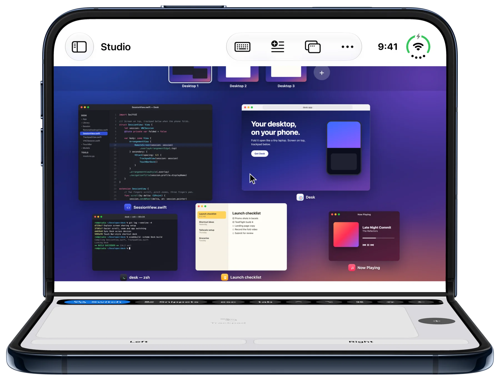
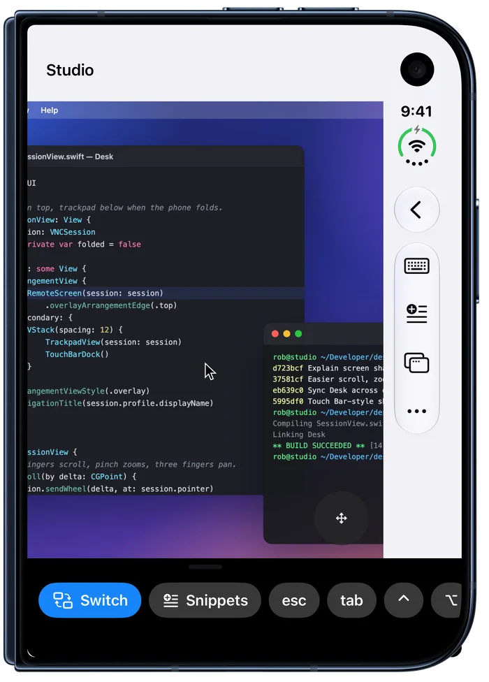
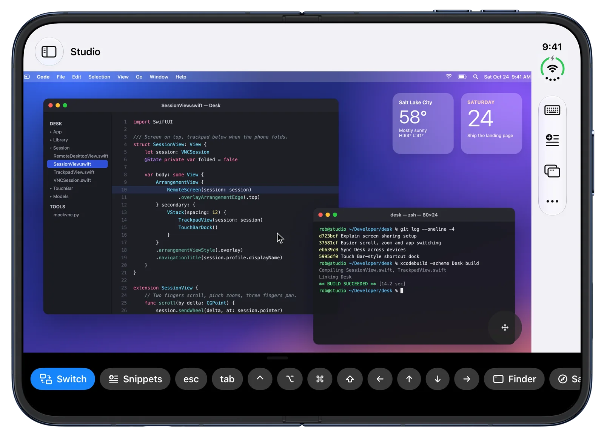
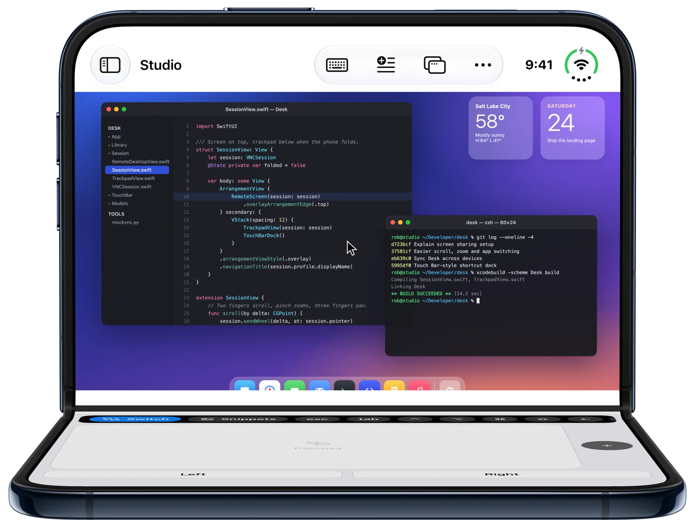
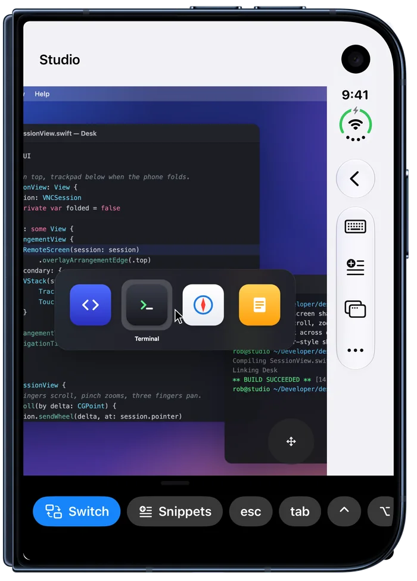
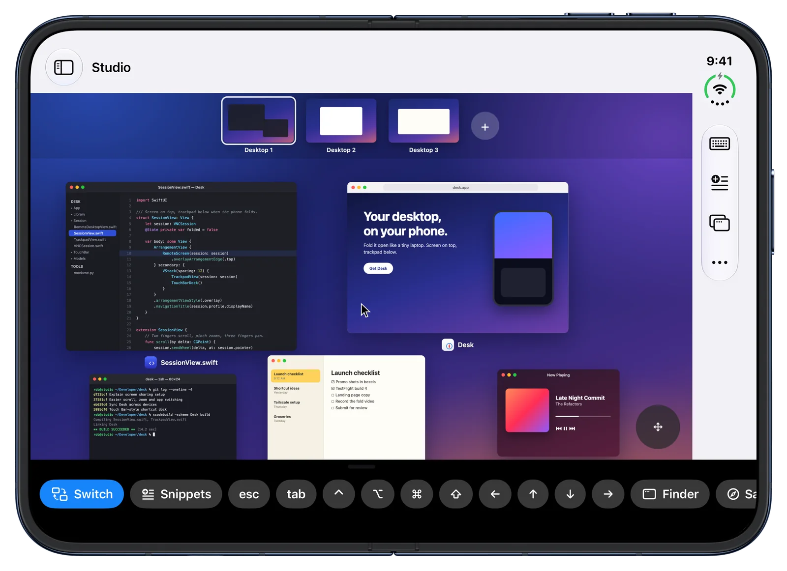

Your shortcuts.
Keys, chords like ⌘⇧4, apps and scripts in a strip you can reorder or tuck away.
Desk
The remote desktop app made for iPhone Duo.
DM @rncrosby on X for TestFlight




Tap Switch and keep tapping. It stays open until you stop, just like holding Command.

Mission Control, Spotlight and more, one tap away in a shortcut bar you arrange yourself.

Keys, chords like ⌘⇧4, apps and scripts in a strip you can reorder or tuck away.
Saved text you tap to type. Copy on iPhone, paste on the Mac.
iPhone, iPad and Mac. Your computers and shortcuts sync through iCloud.
Turn on Screen Sharing in System Settings › General › Sharing.
Add your Mac in Desk by name, like Mac-mini.local.
Sign in with your Mac account. Use Tailscale to connect from anywhere.